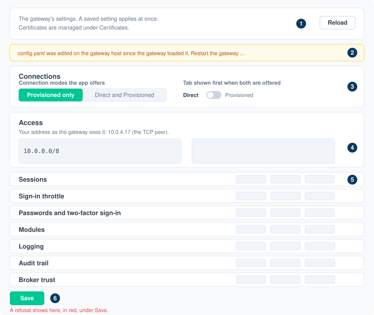
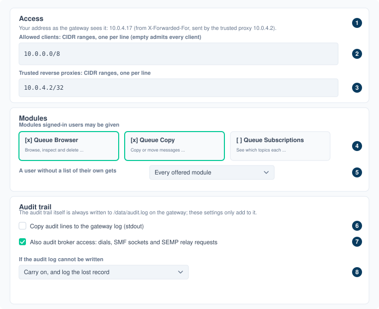
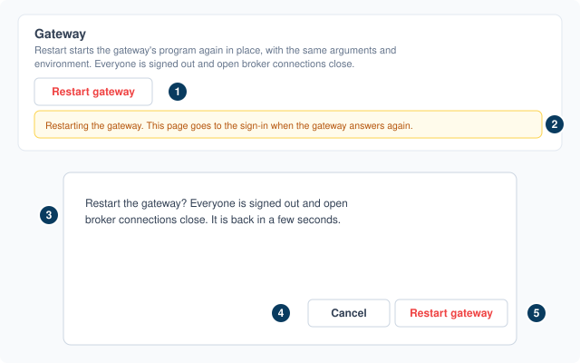

Change how the gateway behaves: which connection tabs the app offers, who may reach it, how long sessions last, how sign-in is protected, which modules users may be given, and what is logged and audited. A saved setting applies at once.
Gateway Settings needs an administrator's session. Without one, the page shows Administrator Sign-in Required and the message Sign in as an administrator to change the gateway settings. in place of the settings. It is a page of the administration app, which the gateway serves at /solAdmin to administrators only.
What an operator sets up outside these pages, such as the environment variables the gateway starts with, is in the Provisioned mode guide.
The page is a stack of cards, one for each group of settings, with Save under them and a Gateway card at the foot. You change as many settings as you like, then press Save once.

When the page opens, it shows the settings the gateway holds at that moment. Reload shows them again.
Settings saved and shows the values the gateway keeps, which can differ in small ways from what you typed. For example, the gateway drops blank lines from a list and orders the modules as the app does.The gateway checks every value as it does at start. If any one is refused, none of the settings is saved, and the reason appears in red under Save. What the gateway refuses is listed under "What Save refuses" below.
| Field | What it does | Choices |
|---|---|---|
| Connection modes the app offers | Which connection tabs people see in the app. | A button with two parts. Provisioned only: everyone signs in, and uses the brokers they were given. Direct and Provisioned: users may also type a broker's details into the Direct form. |
| Tab shown first when both are offered | The tab the app opens on when both are offered. | A switch between Direct (the default) and Provisioned. |
The page offers only these two modes, because this app is served only while the gateway runs in Provisioned mode. The gateway also refuses to save a setting that would turn Provisioned mode off, because that would turn this app off with it.
The Access card decides which computers may reach the gateway at all. It opens with one line that says which address the gateway takes your browser for. Read it before you change either list.

The line begins Your address as the gateway sees it: and then says one of these things.
| The line ends | It means |
|---|---|
(the TCP peer)., followed by advice | The gateway took the address of the connection itself. If that is a proxy's or Docker's address and not yours, every user looks like it. For a reverse proxy, list it under Trusted reverse proxies and have it pass X-Forwarded-For. |
(from X-Forwarded-For, sent by the trusted proxy ...). | The connection came from a proxy you listed, and the gateway believed the address that proxy passed on. |
unknown. and where the connection comes from | The gateway could not read the X-Forwarded-For header. While the address is unknown, a non-empty Allowed clients list cannot be saved. |
unavailable. | The page could not ask the gateway for your address. |
| Field | What it does | What it accepts |
|---|---|---|
| Allowed clients: CIDR ranges, one per line (empty admits every client) | Only clients whose address lies in one of these ranges may reach the gateway. Empty (the default) admits every client. | One range on each line, such as 10.0.0.0/8 or 192.0.2.7/32. The slash and the prefix length are required, so a bare address is refused. Use the IPv4 form for an IPv4 address: an IPv6-mapped one such as ::ffff:10.0.0.1/128 is refused. Blank lines and spaces around a line are dropped. |
| Trusted reverse proxies: CIDR ranges, one per line | The proxies whose X-Forwarded-For header the gateway believes. Without one, it takes the connection's own address as the client. Empty by default. | The same form as above. |
A session is a signed-in browser. These limits apply to every user, administrators included.
| Field | What it does | Accepts | Default |
|---|---|---|---|
| Idle limit (minutes) | A session ends after this long without a request. | A whole number from 1 up to the absolute limit. | 10 |
| Absolute limit (minutes) | A session ends this long after sign-in, however busy it is. | A whole number from 1 to 1440 (a day). | 30 |
| Broker connects per user per minute | How many broker credential requests and messaging sockets one user may open in a minute. | A whole number from 1 to 1000. | 20 |
The gateway also caps how many messaging sockets stay open at once: 20 for one user and 1000 for the whole gateway. Both are fixed and have no setting. A socket beyond either cap is refused until one closes. The connects per minute limit above bounds how fast sockets open, and these caps bound how many stay open.
The throttle slows down anyone who keeps getting a password or a code wrong. After a number of failures, the gateway makes the account, and the client address, wait before it checks another attempt. The wait starts at the first back-off and doubles with each further failure, up to the longest back-off. A successful sign-in clears the account's failures, but never the client's: those fade by themselves after the time you set.
| Field | What it does | Accepts | Default |
|---|---|---|---|
| Count failures per client address | A switch. On, the gateway counts failures for each client address as well as for each account, which catches guesses spread over many usernames. Off, it counts per account only. Turn it off only where every user reaches the gateway from one address: with it on, one person's typos would slow everyone down. | On or off. | On |
| Failed sign-ins per account before a back-off | How many failures one account may have before it must wait. | 1 to 1000. | 5 |
| Failed sign-ins per client before a back-off | How many failures one client address may have, across all accounts, before it must wait. Not used while the switch is off. | 1 to 1000. | 10 |
| Forget failures after (minutes) | A count is forgotten after this long without another failure. | 1 to 1440. | 15 |
| First back-off (seconds) | The first wait. | 1 up to the longest back-off. | 30 |
| Longest back-off (seconds) | The longest the wait can grow to. | 1 to 86400. | 900 |
| Requests and sign-in attempts per minute per client | How many requests without a session, and sign-in attempts, one client address may make in a minute. A script cannot try passwords faster than this, however failures are counted. Raise it if many users share one address. | 1 to 10000. | 60 |
The gateway counts an IPv6 client by its /64 block, because one host usually owns a whole block.
The card says: A raised minimum length applies at the next password change; passwords already set keep working.
| Field | What it does | Accepts | Default |
|---|---|---|---|
| Minimum password length | The shortest password a user may set. It can only tighten the gateway's own rule, which is 12. | 12 to 128. | 12 |
| Two-factor sign-in (code from an authenticator app) | Who must give a code from an authenticator app as well as the password. It applies at the next sign-in, and it cannot be switched off. | See the next table. | Optional |
| Time to finish two-factor after the password (minutes) | How long a sign-in that has passed the password waits for its code. A shorter time also ends sign-ins that are already waiting. | 1 to 60. | 10 |
| Two-factor choice | Who signs in with a code |
|---|---|
| Optional | Those who have set it up. |
| Administrators must use it | Those who have set it up, and every administrator, who must set it up if they have not. |
| Everyone must use it | Everyone. |
A wrong code counts as a wrong password and brings the same waits. How people set two-factor sign-in up, and what to do when someone loses their phone, is in the Two-factor sign-in section of the Provisioned mode guide.
This card decides which pages of the user app a signed-in user may open. The pages for signing in and the administration pages are not on offer here: the first is always shown, and the others belong to administrators.
| Field | What it does | Choices |
|---|---|---|
| Modules signed-in users may be given | A row of toggle tiles, one for each module, each with its name and a line saying what it does. A tile with a tick is offered. Click a tile, or press Space or Enter on it, to switch it. A module that is not offered is out of reach for every user, whatever their own list says. | Queue Browser: Browse, inspect and delete queued messages. Queue Copy: Copy or move messages between queues. Queue Subscriptions: See which topics each queue subscribes to. All three are offered by default. |
| A user without a list of their own gets | What a user receives when no list has been set on their account. A user who has a list gets what it names, among the modules on offer. | Every offered module (the default) or No modules. |
A user's own list is set on the User Management page.
| Field | What it does | Choices |
|---|---|---|
| Log level | How much the gateway writes to its own log: debug writes the most and error the least. | debug, info, warn (the default) and error. |
The gateway always writes an audit trail of what administrators and users do, to /data/audit.log on the gateway. The settings on this card only add to it, and they apply from the next recorded event.
| Field | What it does | Default |
|---|---|---|
| Copy audit lines to the gateway log (stdout) | Also writes each audit line to the gateway's own log, for a log shipper that reads it. | Off |
| Also audit broker access: dials, SMF sockets and SEMP relay requests | Adds a line each time a user is given broker credentials, opens a messaging socket or sends a request through the gateway to a broker. | Off |
| If the audit log cannot be written | What the gateway does when a line cannot be written, for example because the disk is full. Carry on logs the loss and carries on. Refuse changes also refuses every change until a line can be written again. | Carry on |
This card decides how the gateway checks the certificate of a broker it connects to. Both settings apply on Save, with no restart.
| Field | What it does | Default |
|---|---|---|
| Trust the standard root CAs | The gateway trusts the public root CAs its image carries (Mozilla's list), as well as the CA files you add on the Certificates page. With the switch off, only the CA files are trusted. | On |
| Skip broker certificate checks (insecure) | The gateway connects to a broker without checking its certificate at all, so it cannot tell the broker from an impostor. | Off |
A refusal changes nothing: no setting is saved. The text appears in red under Save.
A whole-number field that is empty, or holds anything but a whole number, stops the save before it is sent. The page says <setting> must be a whole number., naming the setting by its key, for example session.idleMinutes must be a whole number.
The gateway checks every value as it does at start and answers with the setting and the allowed range, in this form: key "session.absoluteMinutes" has invalid value "2000": must be 1 to 1440. The ranges are those in the tables above. Two refusals carry a second figure:
key "session.idleMinutes" has invalid value "40": must be 1 to 30 (session.absoluteMinutes is 30).key "login.backoffSeconds" has invalid value "60": must be 1 to 30 (login.maxBackoffSeconds is 30).A bad line in an address list is named by its position, counting from 0: key "access.allow[0]" has invalid value "10.0.0.1": want CIDR such as 10.0.0.0/8 or 192.0.2.7/32 (...), or use the IPv4 form for an IPv6-mapped address.
This allow list would deny your own address (10.0.4.17). Add it, or a range that contains it.The gateway cannot tell your address, so this allow list would deny this browser.| The page says | Why, and what to do |
|---|---|
A dialog: This settings page was changed by someone else since you opened it. with Reload | Another administrator saved first. Reload shows their settings and drops your changes. Cancel, Esc or a click outside leaves the dialog and keeps your edits on the page, but they cannot be saved until you reload. |
config.yaml was edited on the gateway host since the gateway loaded it. Restart the gateway to load that edit, then make your change here. | See the next section. |
The gateway cannot write its audit log and is set to refuse changes until it can. Its log has the cause. | The audit setting above is on Refuse changes, and the audit log is failing. Fix the disk on the gateway host. |
The gateway could not write its data files, so nothing was changed. Its log has the cause. | The settings file could not be written. Check the gateway's data volume on its host. |
The gateway cannot read config.yaml (<cause>). The cause is on the gateway host; once the gateway can read the file again, reload this page. | The page shows this when it loads the settings, instead of the settings, with the cause the gateway found in place of <cause>. Reload once the gateway can read the file. |
The page did not send the version it was working from, so the gateway refused the change. Reload the page and try again. | Press Reload, make your change again and save. |
Your session has ended. Sign in again. | Your session ended. The page signs you out; sign in again. |
This needs an administrator. | Your account is not an administrator. |
Too many requests. Wait a minute and try again. | The gateway is limiting requests. Wait, then save again. |
The gateway could not be reached. or The gateway did not answer in time. If this was a change, it may still have been applied: reload to see where it stands before you try again. | The request may or may not have arrived. Press Reload to see what the gateway holds. |
The gateway writes its settings to a file, config.yaml, in its data volume. It never expects anyone to change that file. If it is changed on the gateway host while the gateway runs, the page shows a banner:
Save is off while the banner shows. The gateway holds to the settings it loaded, and it will not save over a change it has not read. Press Restart gateway to make it read the file, then make your changes. A refused save also brings the banner up.
The users store, the connections store and the store key have no setting: they always live in the gateway's /data folder. Backup & Restore is how you move them to another gateway.
The Gateway card at the foot of the page holds one button, Restart gateway. It makes the gateway start its program again, in place, with the same arguments and environment. You rarely need it: settings apply when you save them. Use it to make the gateway read a settings file that was changed on its host.

Restart the gateway? Everyone is signed out and open broker connections close. It is back in a few seconds.Restarting the gateway. This page goes to the sign-in when the gateway answers again.The page looks for the gateway once a second, for a minute. If it has not answered by then, the progress line goes and the page says The gateway has not answered after a minute. Check it on its host, then reload this page. The button comes back on. If the gateway does not accept the request, the page shows the reason in red under the button.
A restart uses the environment the gateway already has. A change to a variable the operator sets, such as where the gateway finds its certificate, needs the container made again: see the Restart gateway section of the Provisioned mode guide.